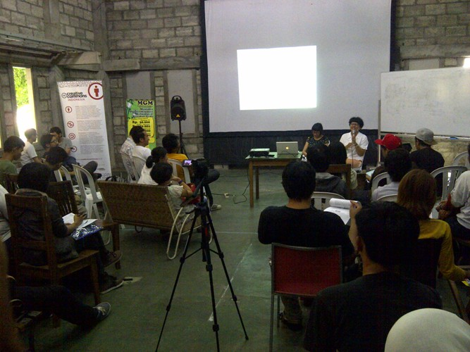

Creative Commons Indonesia di Indonesia Netaudio Festival
Indonesia Netaudio Festival digelar tanggal 16 - 17 November 2012 yang lalu, di Yogyakarta. Indonesia Netaudio Festival adalah kegiatan offline yang melibatkan para pelaku, pemerhati, dan penikmat netaudio di Indonesia. Selain merupakan social gathering antar-pelaku dan penikmat netaudio, kegiatan yang diselenggarakan berupa offline file-sharing, pengumpulan dana berupa penjualan merchandise, diskusi, lokakarya, pemutaran filem dan pertunjukkan musik oleh musisi yang merilis album mereka melalui jaringan internet.

Beruntung, Creative Commons Indonesia dapat hadir untuk berbagi dengan teman-teman Serikat Netlabel Indonesia. Hadir sebagai pembicara pada #INFTALK, Ivan Lanin sebagai wakil direktur proyek Creative Commons Indonesia, bersanding dengan tiga pembicara lainnya yaitu, Wok the Rock (Yes No Wave Music), Anggung Kuy (Bottlesmokers), dan Nuraini Juliastuti (Kunci Culutral Studies Center), yang berdiskusi dengan mengangkat tema Berbagi Musik sebagai Pemberdayaan Budaya.
Diskusi berjalan sangat menarik. Topik yang diusung begitu dekat dan nyata, mengangkat fenomena ‘pembajakan’ yang terjadi di daerah sekitar Malioboro, Yogyakarta. Meskipun demikian yang perlu diapresiasi adalah keinginan berbagi yang semakin meningkat dikarenakan perkembangan teknologi salah satunya internet yang memudahkan berbagi. Konsep berbagi ini pun ternyata terdapat dalam praktik ekonomi, yaitu lebih dikenal dengan gift theory, seperti yang dikemukakan oleh Nuraini dari Kunci. Diskusi semakin menarik saat Ivan Lanin menjelaskan mengenai lisensi Creative Commons yang juga mengusung semangat berbagi untuk memberdayakan. Beberapa pertanyaan muncul mengenai lisensi Creative Commons, salah satunya yang paling populer ditanyakan adalah sebatas apa perlindungan yang diberikan oleh lisensi Creative Commons dan tindakan apa yang dapat dilakukan oleh Creative Commons bila terjadi pelanggaran.
Pada dasarnya lisensi Creative Commons ini merupakan sebuah bentuk perjanjian lisensi Hak Cipta yang pengaturannya masih mengikuti ketentuan Undang-Undang No.19 Tahun 2012 tentang Hak Cipta. Namun yang membedakan Creative Commons dengan lisensi lain adalah kemudahannya untuk dipahami oleh orang awam. Oleh karena implementasi dari lisensi Creative Commons masih mengikuti aturan hukum yang berlaku di Indonesia, maka apabila terjadi pelanggaran Hak Cipta pun harus kembali pada pengaturan mengenai pelanggaran Hak Cipta menurut UU No. 19/2002. Hanya saja untuk kedepannya, Creative Commons Indonesia berencana untuk memfasilitasi para pengguna CC untuk membantu melakukan upaya-upaya apabila terjadi pelanggaran Hak Cipta pada karya mereka. Upaya-upaya tersebut yaitu dengan memberikan template teguran, somasi, mediasi, serta litigasi dari pengacara yang secara pro bono memberikan pelayanannya.

Diskusi ditutup dengan pembagian poster CCID kepada para peserta yang telah memberikan pertanyaan. Diharapkan kegiatan ini dapat menambah pengetahuan para penggerak musik mengenai keuntungan berbagi, seperti yang juga telah diutarakan oleh Anggung Kuy dari Bottlesmokers dan Wok the Rock dari Yes No Wave yang telah membuktikan keampuhan berbagi sebagai media promosi mereka. Semangat berbagi! Sharing to empower!
Tags:
Oleh: Creative Commons Indonesia
26 Nov 2012Kategori:
Berita Terbaru
- Lokakarya Hak Cipta dan Lisensi Creative Commons di Pekanbaru
- Pengumuman Resmi: Hasil Akhir Training of Trainers Creative Commons Indonesia
- Literatur tentang Model Bisnis Terbuka "Made With CC"
- Data dan Artikel Ilmiah Terbuka dari PLOS!
- Konten Format Model 3 Dimensi Berilsensi CC di Platform Sketchfab